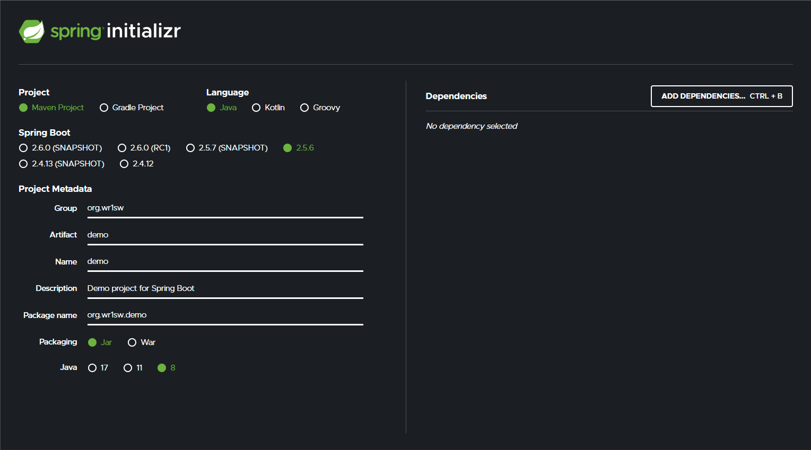
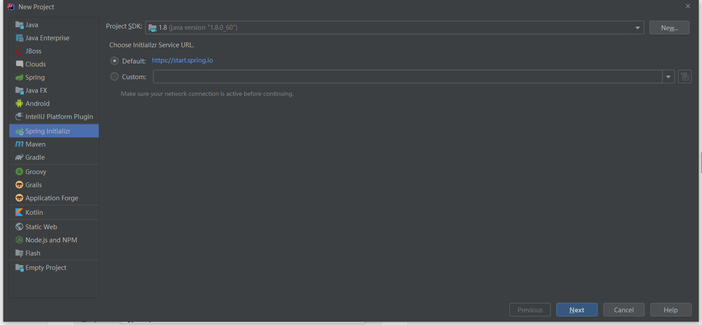
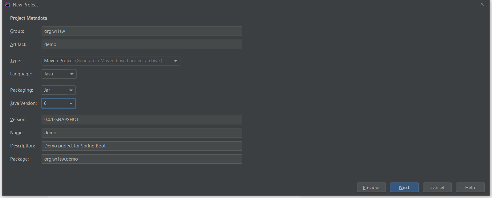
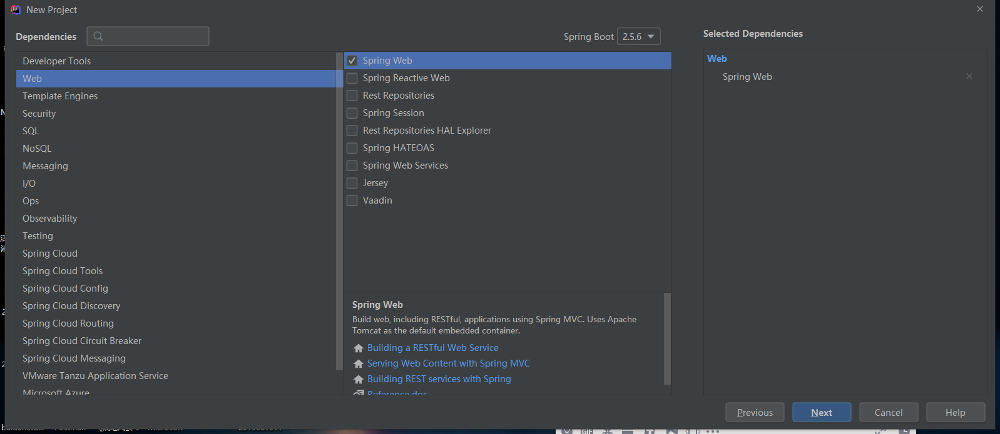
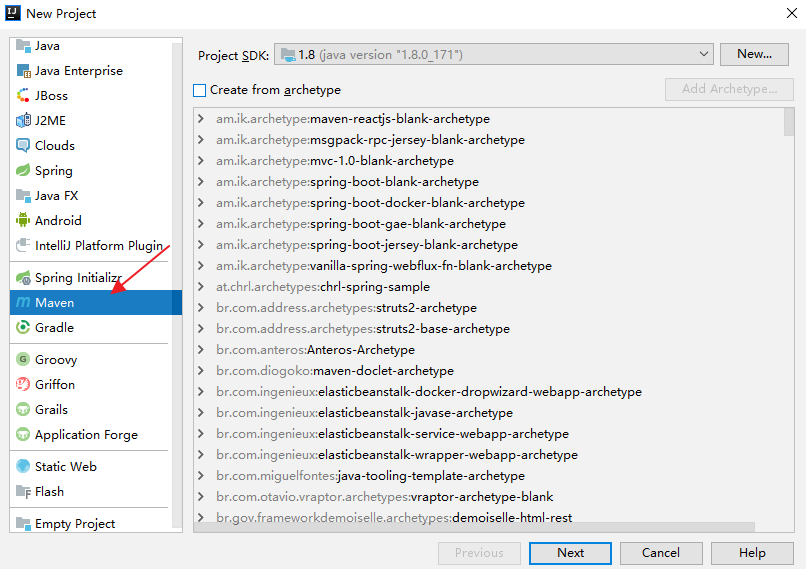
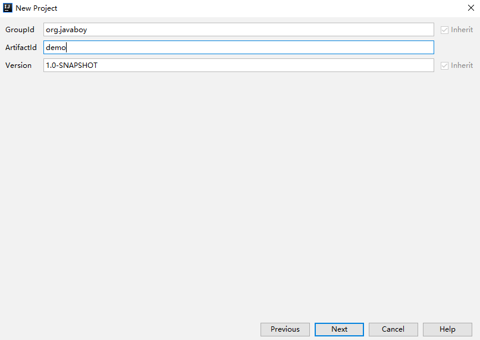
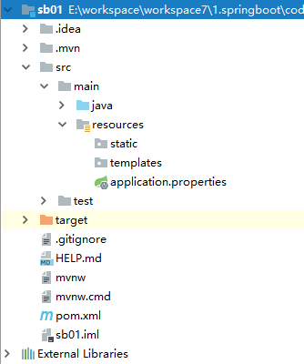

SpringBoot的介绍
上javaweb课程的时候，使用Servlet/JSP做开发，一个接口就需要搞一个Servlet，使用很不方便；后来引入了SpringMVC一类的框架，提高了生产力，但是用久了，发现了新问题，即配置繁琐易出错；如果想做一个新项目，需要先搭环境，环境也就是那几行配置，不同的项目可能只有包不同，其他部分的配置都是一样的，Java总背诟病配置繁琐代码量巨大（我学习了golang之后发现go真的太香了），那怎么办呢？Spring Boot应运而生，主要提供了如下功能
为所有基于Spring的Java开发提供了方便快捷的入门体验
开箱即用，有自己的自定义配置的话用自己的，没有的话用官方自带的即可
提供了一系列通用的非功能性的功能，例如嵌入式服务器、安全管理、健康检测等
绝对没有代码生成，也不需要XML配置
SpringBoot系统要求
至少要求JDK8，内置的Tomcat版本是9.0
SpringBoot项目的三种创建方式
在线创建
这个是官方推荐的创建方式，实际上我们使用IEDA创建SpringBoot项目(第二种方式),也就是从这个网站上或者其他网站上创建的，只不过开发工具帮我们完成了这个过程。
首先打开 https://start.spring.io这个网站，如下图：

配置简单说明：
构建工具是Maven还是Gradle，我这里选择创建Maven项目
开发语言，这个当然选择Java
SpringBoot 版本，可以看到目前的最新稳定版是2.5.6，所以我这里选择最新稳定版
既然是Maven工程，当然得用项目坐标、项目描述等信息，另外这里还需要输入包名，因为创建成功后会自动生成启动类
Packing表示项目要打包成jar包还是war包，SpringBoot的一大优势就是内嵌了Servlet容器，所以打成jar包可以直接运行。当然也可以更具实际情况选择war包
选择构建的JDK版本
选择需要的依赖，输入关键字比如说web，会有相关的提示，这里我先加入web依赖
所有的事情都完成后，点击下方的generate按钮或者快捷键Alt+Enter，将下载下来的项目解压，然后用IDEA打开即可。
使用开发工具创建
有人觉得使用第一种方式创建项目过于繁琐，那么可以使用开发工具来创建。需要注意的是IDEA只有ultimate版才能创建SpringBoot项目，社区版无此功能。学生可以通过教育邮箱免费白嫖
首先，在创建项目的时候选择Spring Initializr

然后点击Next，填入Maven项目的基本信息

选择依赖

完成创建
使用Maven创建
上面提到的创建SpringBoot项目的方式都借助到了https://start.spring.io/ 这个网站；有时候网站不会很稳定，会出现项目创建失败的情况，所以这个时候可以选择通过Maven来创建项目。步骤如下
首先创建一个普通的Maven项目

注意这里不用选择项目骨架（如果大伙是做练习的话，也可以去尝试选择一下，这里大概有十来个 Spring Boot 相关的项目骨架），直接点击 Next ，下一步中填入一个 Maven 项目的基本信息，如下图：

然后点击Next完成项目的创建。
创建完成之后，在pom.xml文件下，添加如下依赖
1 | <parent> |
添加成功之后，在Java目录中创建包，编写启动类，这边参考松哥的启动类
1 | @EnableAutoConfiguration |
@EnableAutoConfiguration注解表示开启自动化配置
接下来执行main方法就可以启动一个SpringBoot项目了
项目结构(参考松哥)：

总结
以上就是常用的创建SringBoot项目的方式，随着我的学习，如果有更好的创建方式会分享给大家。